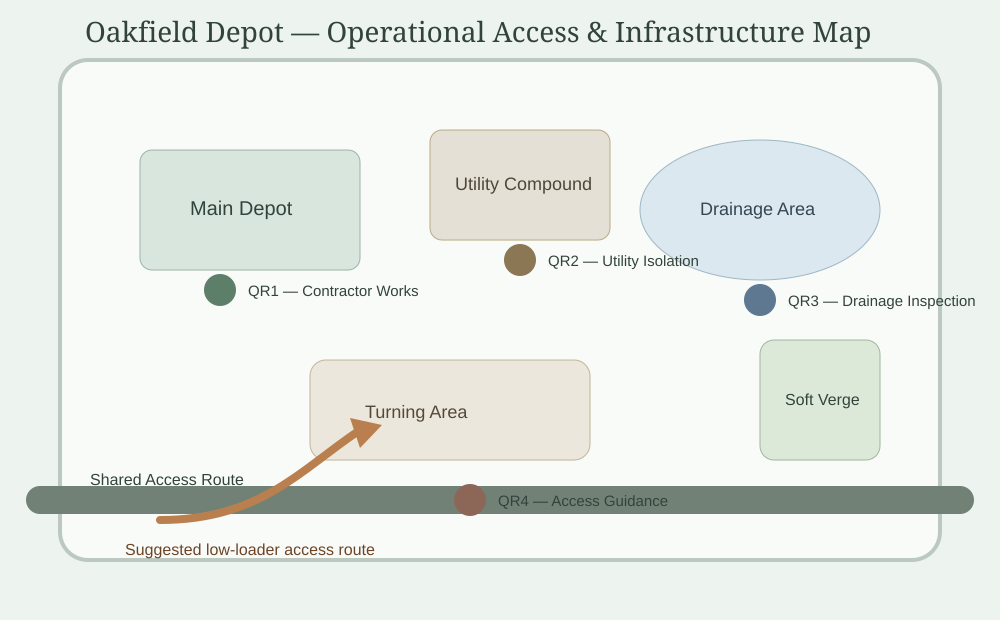

Hold / Strata Estates / Oakfield Depot / QR3 Drainage Inspection
View Oakfield Depot operational map

Operational map showing drainage risk areas,
access constraints and QR inspection points.
Inspection Checks
Drainage Review
- Check standing water near eastern access route
- Record condition after prolonged rainfall
- Photograph blocked drains or soft ground areas
- Escalate if access route becomes unsuitable for heavy vehicles
- Review temporary access arrangements during wet conditions
Current Observation
Seasonal Risk Notes
-
Soft verge condition
Ground stability variable after recent rainfall
-
Drainage area
Monitor before contractor access or low-loader delivery
-
Eastern access route
Standing water reported during previous inspection period